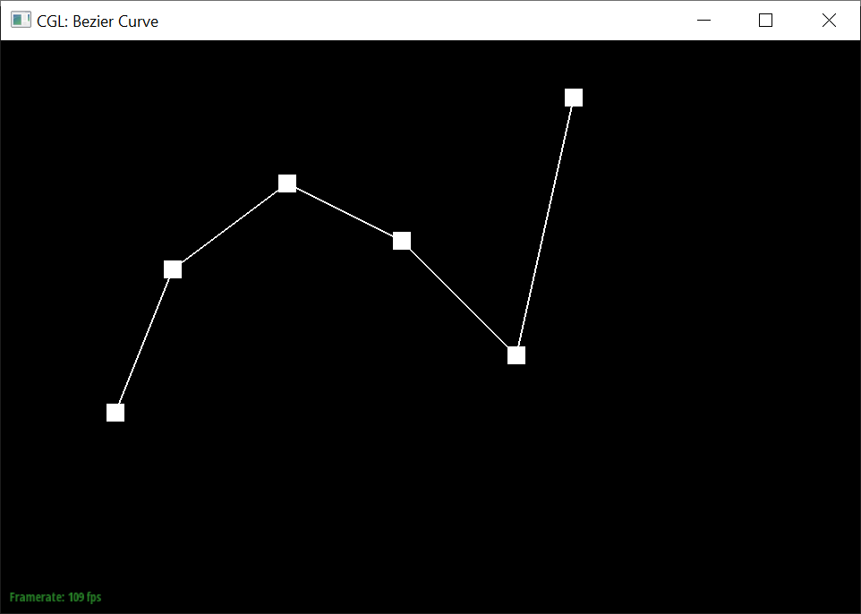

Overview
In the following Mesh Editor project, we implement various ways to generate, represent, and refine 2D and 3D geometries. We started with visualizing 2D Bezier curves and 3D Bezier surfaces represented by a series of control points, and then moved on to implement several essential operations in order to increase customizability for the halfedge data structure. This also included accounting for and modifying certain features of related structures such as vertices, edges, and faces. More generally, we experimented with manipulating the form of half-edge structures to observe their effect on mesh representations.
Something we learned to appreciate more was the beauty of simple data structures. The idea of a half edge whose only parameters only involve features directly next to it appears very basic at a glance. However, the incredible structures, patterns, and concepts that result from the scope of the structure being expanded were really eye-opening.
Section I: Bezier Curves and Surfaces
Part 1: Bezier curves with 1D de Casteljau subdivision
De Casteljau’s algorithm provides a method of constructing Bezier curves by linearly interpolating using the parameter t ∈ [0, 1] between successive control points, then between the new linearly interpolated points, until one point remains. By calculating the resulting point for a sweep of parameter values, the final Bezier curve that goes through the first and last control points can be constructed from the calculated points.
In Part 1, we implemented one step of the de Casteljau’s algorithm by calculating the interpolated point at a given parameter value t for every pair of successive input points, following the equation given below:
All of the calculated interpolated points were collected into an std::vector and returned by the function.
|  |

|

|
Part 2: Bezier surfaces with separable 1D de Casteljau subdivision
By increasing the number of linear interpolations to account for an additional dimension, de Casteljau’s algorithm can be extended to evaluate Bezier surfaces. Given an n x n grid of control points, the 1D de Casteljau’s algorithm is applied n times with parameter u ∈ [0, 1] to calculate n intermediate control points. Then, the 1D de Casteljau’s algorithm is applied again on these n intermediate points with parameter v ∈ [0, 1] to obtain the final point. By calculating the resulting point for a sweep of u and v values, the final Bezier surface that goes through the four corner control points can be constructed.
This algorithm was implemented using three helper functions. Similar to Part 1, in BezierPatch::evaluateStep we implemented one step of the de Casteljau’s algorithm by calculating the interpolated point at a given parameter value t for every pair of successive input points, returning a vector of calculated points. Next, this function was called recursively in BezierPatch::evaluate1D to return one final calculated point from the inputted control points. Finally, BezierPatch::evaluate implemented the de Casteljau algorithm for Bezier surfaces as described above, by calling evaluate1D n times to calculate the intermediate control points, and calling it once more to find the final point, which is returned by the function.
Section II: Sampling
Part 3: Average normals for half-edge meshes
Given a starting vertex, we used the vertex’s halfedge() pointer to traverse and access the positions of the three vertices of the triangle face containing that half-edge as one of its three boundaries. Using these three positions, we calculated the difference between a vector leading to the closest vertex position from the origin and a vector from the origin leading to each of the two remaining vertices. We then calculated a cross product using the two resulting difference vectors. This cross product represented the area-weighted normal of the face and we added it to the collective result.
From there we used the halfedge’s twin() and next() pointers to iterate to the next face and perform the same calculation, until we had returned to the starting halfedge, ie. ran through all faces surrounding the starting vertex. At the end, we normalized this collective result as the return value.
|
|
|
Part 4: Half-edge flip
To implement the edge flip operation, we first checked to see if the edge is a boundary edge, and returned itself if it is.
If not, we first listed all of the relevant halfedges, edges, vertices, and faces in the two relevant triangles with a shared edge, annotated in the diagram below [source]. The outside halfedges, ie. h6, h7, h8, and h9 in the diagram, were omitted for simplicity since they would not be affected by the operation. Next, we reassigned the halfedge pointer of every vertex, face, and edge to a correct halfedge as shown in the “After Flip” diagram. If there were multiple halfedges that could apply, a random one was chosen. Finally, we set the next, twin, vertex, edge, and face of every halfedge to their correct values following the “After Flip” diagram, and returned the EdgeIter to e0.

We were able to successfully implement this without running into any bugs, owing to careful accounting and assigning of all relevant pointers.
|
|

|
Part 5: Half-edge split
To implement the edge split operation, we first checked to see if the edge is a boundary edge, and returned its root vertex if it is.
If not, the setup was similar to how edge flips were implemented. The naming convention and data structure are visualized in the diagram drawn below. We first listed all of the relevant halfedges, edges, vertexes, and faces in the two relevant triangles with a shared edge, annotated in the diagram below. Then, we created pointers for 1 new vertex, 2 new faces, 3 new edges, and 6 new halfedges.
Next, we reassigned the halfedge pointer of every vertex, face, and edge to a correct halfedge as shown in the post-split diagram. If there were multiple halfedges that could apply, a random one was chosen. The position of the new vertex was set to the midpoint between the vertexes of the splitted edge. In preparation for Part 6, the newly created edges (e6 and e7 in the diagram above) were flagged as new edges created by the edge split, and the split edges (e0 and e5) were flagged as old edges. Finally, we set the next, twin, vertex, edge, and face of every halfedge to their correct values following the post-split diagram, and returned the VertexIter to the newly created vertex v4.
We encountered a minor bug that resulted in a missing face when an edge was split, but quickly discovered a typo in halfedge pointer reassignment that fixed this. Checking all of the pointer assignments against the diagram drawn above significantly expedited implementation and pointer accounting.
|
|

|
|
Part 6: Loop subdivision for mesh upsampling
To implement loop subdivision, we began by iterating through every currently existing vertex and calculating what their new position would be. Next, we iterated through every edge and calculated the position where every new vertex would be, saving it in the edge data structure the vertex would be located in (since the edges being split would have a new vertex in the center of them).
We then iterated through the existing edges again and split each one, saving the stored newPosition to the created vertex’s position parameter. We guaranteed that we were splitting an old edge that hadn’t been split yet by checking that the vertices on either side of it both had their isNew parameter marked as false.
Afterwards, we flipped all edges that were connected to one new vertex and one old vertex. Once these operations were finished, we updated the actual position parameter of all vertices using their previously calculated newPositions.
Usually, upon finding a bug we had to question whether we were understanding the implementation of the methods we used correctly, and eliminate possible error cases where we might be using some syntax incorrectly or actually had to handle an edge case we thought was already accounted for. However, in this situation we were the ones who implemented methods we used in Task 6 like splitEdge, flipEdge, and computeCentroid. This meant whenever we had a problem we were able to actually edit the implementation to take care of things we had missed since we were aware of what edge cases it handled and which it didn’t.
For example, one bug we encountered was that calling the loop subdivision algorithm with the L hotkey caused the GUI to load indefinitely. We initially thought that this was caused by an infinite loop within our function, which we tested by setting a breakpoint between every loop to see which one was causing the issue (if the breakpoint was never reached, then a previous loop is looping infinitely). However, the program was able to reach a breakpoint at the very end of the upsample function, so we concluded that infinite looping wasn’t the cause. Eventually, we hypothesized that the cause was that the edge flip loop was flipping old edges that were split into two edges by the edge split function. At this time, our implementation had flagged all created edges as new so that they would not be split again in the edge split loop. To address this bug, instead of flagging these split edges as new in splitEdge, we flagged them as old, and adjusted our conditional for determining which old edges to split by checking if they connected two old vertices instead of if it was not flagged as a new edge. Thus, we could now check if the edge was newly created in addition to if it connected an old and a new vertex to determine whether an edge should be flipped.
Each time loop subdivision is used, it leads to an increase in faces that can be used which subsequently results in tinier subdivisions of larger surfaces being created. Overall, sharp corners and edges become more and more rounded out.
You can reduce this smoothing effect by pre-splitting edges. Pre-splitting edges will divide larger surfaces into finer areas but still keep the mesh in its previous shape, since vertex locations are not updated. If you do this then run loop subdivision the mesh will already be quite fine and round out in a less significant way.
Without preprocessing, the cube eventually subdivides into an asymmetrical shape shown in the images below. Two opposite corners of the cube (in the images below, top left and bottom right) appear to be sharper than the other two corners.
Using the original mesh without any preprocessing, a single diagonal edge traverses asymmetrically across each face of the cube. Its diagonal orientation makes it impossible to symmetrically split a face using 4-1 triangle subdivision. This asymmetricality initially does not make that big of a visual impact, however as we recursively loop subdivide large numbers of times this difference gets amplified. To expand on this, each recursive case that is formed branches into another multiple of cases that each continue to branch on their own.
However, we can pre-process the cube with edge flips and splits so that the cube subdivides symmetrically. By splitting the middle edge of each face so that there are four smaller triangles pointing towards the center of the cube, we have preprocessed it to loop subdivide into a more symmetrical structure. Each face of the cube now has a symmetrical collection of edges spanning it that can be equally divided.
Section III: Optional Extra Credit
N/A :) :)
If you are not participating in the optional mesh competition, don't worry about this section!
Part 7: Design your own mesh!
This writeup is published at: https://cal-cs184-student.github.io/sp22-project-webpages-p-amyjiang/proj2/index.html